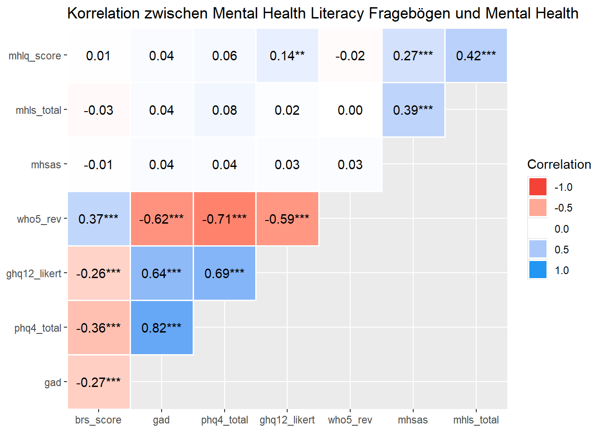
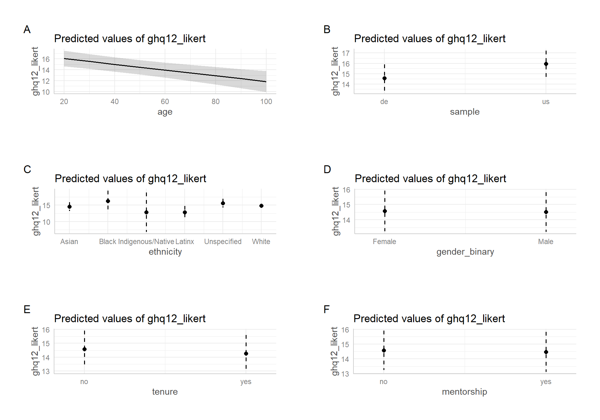
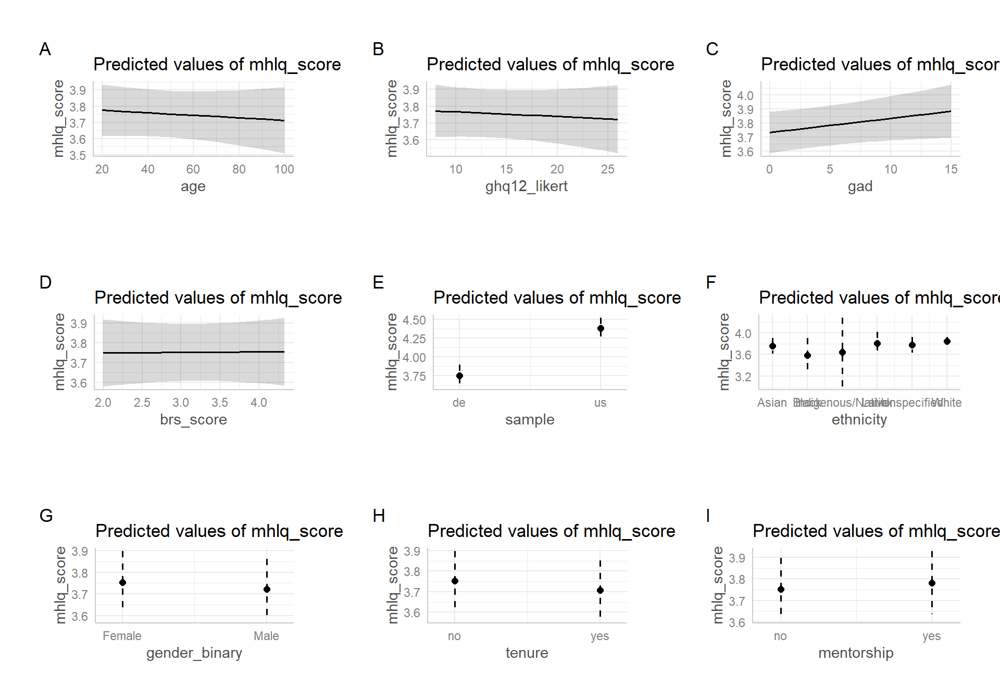
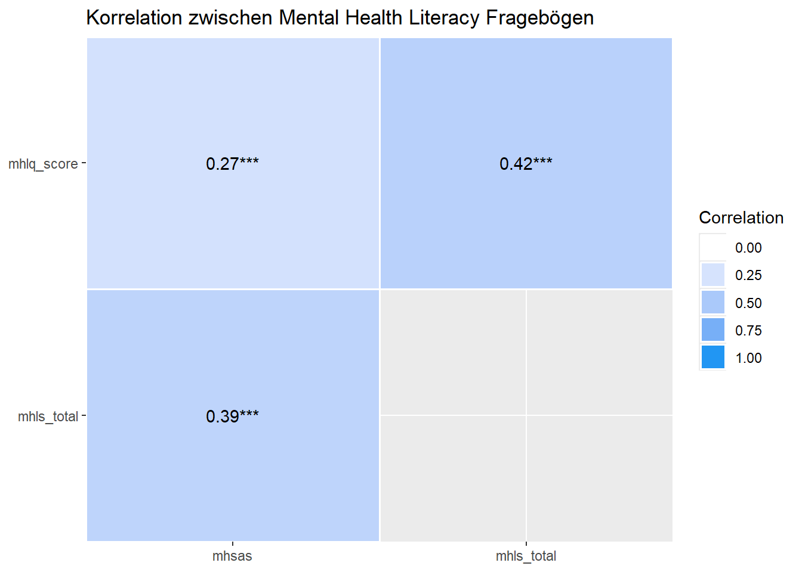

Mental Health Literacy among STEM Professionals
1 Einleitung
Dieses Dokument enthält erste deskriptive und inferenzstatistische Analysen zur Mental Health Literacy unter Personen in MINT-Fächern (STEM: Science, Technology, Engineering, Mathematics).
⚠️ Hinweis:
Dieses Dokument ist ein vorläufiger Bericht und befindet sich in Bearbeitung (Work in Progress). Ergebnisse und Interpretationen sind nicht final und können sich im weiteren Verlauf der Analyse ändern.
2 Deskrptive Analysen
2.1 Stichprobenbeschreibung
Die Stichprobe besteht aus insgesamt Personen.
Das durchschnittliche Alter lag in beiden Gruppen bei ca. 48–49 Jahren (p = .60). Die US-Stichprobe war ethnisch deutlich diverser (p < .001). Hinsichtlich des Geschlechts zeigten sich keine signifikanten Unterschiede (p = .50). Die US-Stichprobe zeigt einen signifikant höheren Anteil an Personen mit Tenure im Vergleich zur deutschen Stichprobe (p < .001).
2.2 Psychische Gesundheit
Die folgende Tabelle zeigt die Verteilung der psychischen Gesundheit in beiden Stichproben.
Die psychische Belastung war in beiden Gruppen vergleichbar. Nur beim GHQ-12 zeigten sich signifikant höhere Werte in der US-Stichprobe (p < .001), was auf eine etwas höhere Belastung hindeutet. In der deutschen Stichprobe waren beim GHQ-12 71.33% der Befragten über dem Cut-Off-Wert von 12, während es in der US-Stichprobe 87.85% waren. Beim WHO-5 hatten in der deutschen Stichprobe rund 34.33% ein verringertes Wohlbefinden, in der US-Stichprobe waren es 38.14%. Beim GAD-7 zeigte sich in der deutschen Stichprobe, dass 4.00% der Befragten mindestens moderate Ängstlichkeit zeigten, in der US-Stichprobe waren es 3.67%. Beim PHQ-4 berichteten 13.33% der deutschen Stichprobe mindestens leichte depressive Symptome, in der US-Stichprobe waren es 12.57%.
2.3 Mental Health Literacy
Die folgende Tabelle zeigt die Verteilung der Mental Health Literacy in beiden Stichproben.
| Skala | de N = 3001 |
us N = 3541 |
p-value2 |
|---|---|---|---|
| MHLQ | 3.83 (0.23) | 4.45 (0.38) | <0.001 |
| MHLS | 3.39 (0.26) | 3.44 (0.30) | 0.009 |
| MHSAS | 4.23 (0.56) | 4.23 (0.61) | 0.927 |
| 1 Mean (SD) | |||
| 2 Wilcoxon rank sum test | |||
Die US-Stichprobe zeigte signifikant höhere Werte bei der allgemeinen mental health literacy (MHLQ) und auch leicht höhere Werte auf der MHLS (p < .001 bzw. p = .009). In den Einstellungen zur Inanspruchnahme professioneller Hilfe (MHSAS) unterschieden sich die Gruppen nicht signifikant.
2.3.1 MHLq Subskalen
Die folgende Tabelle zeigt die Verteilung der MHLQ-Subskalen in beiden Stichproben.
| Subskala | de N = 3001 |
us N = 3541 |
p-value2 |
|---|---|---|---|
| Knowledge of mental health problems | 3.66 (0.38) | 4.41 (0.46) | <0.001 |
| Erroneous beliefs/stereotypes | 3.86 (0.26) | 4.82 (0.42) | <0.001 |
| Help-seeking and first aid skills | 3.95 (0.61) | 4.08 (0.74) | 0.004 |
| Self-help strategies | 4.24 (0.50) | 4.54 (0.53) | <0.001 |
| 1 Mean (SD) | |||
| 2 Wilcoxon rank sum test | |||
Die US-Stichprobe berichtete durchweg höhere Werte in allen Subskalen der MHLQ. Besonders deutlich waren die Unterschiede bei Wissen über psychische Erkrankungen und der Ablehnung von Stereotypen (p < .001).
2.3.2 MHLS Subskalen
Die folgende Tabelle zeigt die Verteilung der MHLS-Subskalen in beiden Stichproben.
| Variable | de N = 3001 |
us N = 3541 |
p-value2 |
|---|---|---|---|
| Ability to recognise specific disorders | 2.91 (0.41) | 3.00 (0.43) | 0.002 |
| Knowledge of risk factors and causes | 3.00 (0.36) | 3.01 (0.35) | 0.772 |
| Knowledge of self-treatments | 2.48 (0.28) | 2.47 (0.28) | 0.903 |
| Knowledge of professional help available | 4.12 (0.66) | 4.16 (0.71) | 0.359 |
| Attitudes that promote recognition and appropriate help-seeking | 4.40 (0.51) | 4.51 (0.45) | 0.004 |
| 1 Mean (SD) | |||
| 2 Wilcoxon rank sum test | |||
Die Ergebnisse zeigen signifikante Unterschiede zwischen den US- und deutschen Stichproben in der Fähigkeit, spezifische Störungen zu erkennen, und in den Einstellungen zur Hilfesuche. In anderen Bereichen wurden keine signifikanten Unterschiede festgestellt.
2.4 Einfluss von Tenure
2.4.1 Psychische Gesundheit
Die folgende Tabelle zeigt die Verteilung der psychischen Gesundheit in Abhängigkeit vom Tenure-Status.
| Skala | no N = 2581 |
yes N = 3961 |
p-value2 |
|---|---|---|---|
| WHO-5 | 36 (21) | 42 (19) | <0.001 |
| GHQ-12 | 16 (3) | 15 (3) | <0.001 |
| PHQ-4 | 3 (3) | 2 (2) | 0.006 |
| GAD-7 | 4 (3) | 3 (3) | 0.013 |
| BRS | 3.23 (0.35) | 3.27 (0.34) | 0.110 |
| 1 Mean (SD) | |||
| 2 Wilcoxon rank sum test | |||
Die Analyse zeigt signifikante Unterschiede im psychischen Wohlbefinden basierend auf dem Tenure-Status. Personen mit Tenure (ja) weisen höhere Werte im WHO-5 auf, was auf ein besseres Wohlbefinden hinweist (p < 0.001). Sie haben auch niedrigere Werte im GHQ-12, PHQ-4 und GAD-7, was auf weniger psychische Belastungen hindeutet (p < 0.001, p = 0.006, p = 0.013). Der BRS-Score zeigt keine signifikanten Unterschiede (p = 0.110), was darauf hinweist, dass die Widerstandsfähigkeit unabhängig vom Tenure-Status ist.
2.4.2 Mental Health Literacy
Die folgende Tabelle zeigt die Verteilung der Mental Health Literacy in Abhängigkeit vom Tenure-Status.
| Skala | no N = 2581 |
yes N = 3961 |
p-value2 |
|---|---|---|---|
| MHLQ | 4.27 (0.45) | 4.09 (0.43) | <0.001 |
| MHLS | 3.43 (0.28) | 3.40 (0.29) | 0.163 |
| MHSAS | 4.26 (0.56) | 4.21 (0.60) | 0.343 |
| 1 Mean (SD) | |||
| 2 Wilcoxon rank sum test | |||
Die Analyse zeigt, dass Personen ohne Tenure signifikant höhere MHLQ-Werte aufweisen (p < 0.001), was auf eine bessere mentale Gesundheitskompetenz hinweist. Es gibt jedoch keine signifikanten Unterschiede in den MHLS- und MHSAS-Werten basierend auf dem Tenure-Status (p = 0.163 bzw. p = 0.509).
2.5 Einfluss von Gender
2.5.1 Psychische Gesundheit
Die folgende Tabelle zeigt die Verteilung der psychischen Gesundheit in Abhängigkeit vom Geschlecht. Der Einfachheit halber wurden hier nur Männer und Frauen verglichen.
| Skala | Female N = 2481 |
Male N = 3761 |
p-value2 |
|---|---|---|---|
| WHO-5 | 37 (19) | 42 (21) | <0.001 |
| GHQ-12 | 15 (3) | 15 (3) | 0.041 |
| PHQ-4 | 3 (2) | 2 (3) | 0.004 |
| GAD-7 | 4 (3) | 3 (3) | 0.002 |
| BRS | 3.23 (0.34) | 3.26 (0.34) | 0.449 |
| 1 Mean (SD) | |||
| 2 Wilcoxon rank sum test | |||
Die Analyse zeigt signifikante Geschlechtsunterschiede in mehreren psychischen Gesundheitsindikatoren. Frauen weisen niedrigere WHO-5-Werte auf, was auf ein geringeres Wohlbefinden hinweist (p < 0.001). Sie haben auch höhere Werte im PHQ-4 und GAD-7, was auf mehr Angst und Depression hindeutet (p = 0.004 bzw. p = 0.002). Der GHQ-12-Score ist ebenfalls signifikant höher bei Frauen (p = 0.041). Der BRS-Score zeigt keine signifikanten Unterschiede (p = 0.449).
2.5.2 Mental Health Literacy
Die folgende Tabelle zeigt die Verteilung der Mental Health Literacy in Abhängigkeit vom Geschlecht.Der Einfachheit halber wurden hier nur Männer und Frauen verglichen.
| Skala | Female N = 2481 |
Male N = 3761 |
p-value2 |
|---|---|---|---|
| MHLQ | 4.19 (0.44) | 4.13 (0.45) | 0.133 |
| MHLS | 3.42 (0.28) | 3.40 (0.29) | 0.599 |
| MHSAS | 4.30 (0.56) | 4.18 (0.60) | 0.011 |
| 1 Mean (SD) | |||
| 2 Wilcoxon rank sum test | |||
Die Analyse zeigt, dass Frauen signifikant höhere MHSAS-Werte aufweisen als Männer (p = 0.011), was auf eine bessere mentale Gesundheitskompetenz in Bezug auf soziale Unterstützung hinweist. Es gibt jedoch keine signifikanten Unterschiede zwischen den Geschlechtern in den MHLQ- und MHLS-Werten (p = 0.133 bzw. p = 0.599).
3 Inferenzstatistische Analysen
3.1 Korrelation zwischen Mental Health Literacy und psychischer Gesundheit
Der folgende Plot zeigt die Korrelationen zwischen Mental Health Literacy (MHLQ) und psychischer Gesundheit/Stresserholung (GHQ-12, PHQ-4, GAD-7, BRS).

Die Korrelationsanalyse zeigt, dass die mentalen Gesundheitskompetenz-Fragebögen (MHLQ-Score, MHLS-Total, MHSAS) keine signifikanten Korrelationen mit dem BRS-Score aufweisen. Der MHLQ-Score korreliert schwach positiv mit dem GHQ-12 (r = 0.14, p < 0.01), während die anderen mentalen Gesundheitskompetenz-Fragebögen keine signifikanten Korrelationen mit GAD-7, PHQ-4 oder WHO-5zeigen.
3.2 Prädiktoren für mentale Gesundheit
Die folgende Tabelle zeigt die Ergebnisse einer multiplen Regressionsanalyse, in der die psychische Gesundheit (GHQ-12) durch verschiedene Prädiktoren (Alter, Herkunft, Geschlecht, Tenure) erklärt wird.
| Prädiktor | Beta | 95% CI | p-value | q-value1 | Std. Beta |
|---|---|---|---|---|---|
| Alter | -0.05 | -0.08, -0.03 | <0.001 | <0.001 | -0.21 |
| Sample | |||||
| de | — | — | |||
| us | 1.4 | 0.84, 1.9 | <0.001 | <0.001 | 0.43 |
| Herkunft | |||||
| Asian | — | — | |||
| Black | 1.7 | -1.4, 4.9 | 0.3 | 0.5 | 0.55 |
| Indigenous/Native | -1.7 | -7.8, 4.4 | 0.6 | 0.8 | -0.54 |
| Latinx | -1.7 | -3.8, 0.40 | 0.11 | 0.4 | -0.55 |
| Unspecified | 1.0 | -0.70, 2.7 | 0.2 | 0.5 | 0.32 |
| White | 0.23 | -0.96, 1.4 | 0.7 | 0.8 | 0.07 |
| Gender | |||||
| Female | — | — | |||
| Male | -0.07 | -0.57, 0.44 | 0.8 | 0.8 | -0.02 |
| Tenure | |||||
| no | — | — | |||
| yes | -0.31 | -0.88, 0.26 | 0.3 | 0.5 | -0.10 |
| Mentorship | |||||
| no | — | — | |||
| yes | -0.11 | -0.68, 0.46 | 0.7 | 0.8 | -0.03 |
| Abbreviation: CI = Confidence Interval | |||||
| R² = 0.100; Adjusted R² = 0.085; Sigma = 3.02; Statistic = 6.68; p-value = <0.001; df = 10; Log-likelihood = -1,541; AIC = 3,106; BIC = 3,159; Deviance = 5,479; Residual df = 602; No. Obs. = 613 | |||||
| 1 False discovery rate correction for multiple testing | |||||
Die Regressionsanalyse zeigt, dass die US-Stichprobe im Vergleich zur deutschen Stichprobe signifikant höhere Werte im GHQ-12 aufweist (p < 0.001). Das Alter hat ebenfalls einen signifikanten negativen Einfluss auf den GHQ-12-Score (p < 0.001), was darauf hindeutet, dass jüngere Personen höhere Werte haben. Die ethnische Zugehörigkeit und das Geschlecht zeigen größtenteils keine signifikanten Unterschiede, mit Ausnahme der Kategorie “Trans”, die signifikant höhere Werte aufweist (p = 0.005). Der Tenure-Status hat keinen signifikanten Einfluss auf den GHQ-12-Score (p = 0.988), ebensowenig mentorship (p = 0.267. Das Modell erklärt etwa 10% der Varianz im GHQ-12-Score. Die Effektgrößen variieren von sehr klein bis mittel, wobei die meisten Effekte als klein oder sehr klein eingestuft werden, mit einigen mittleren (ethnicity [Black], ethnicity [Indigenous/Native], ethnicity [Latinx]) Effekten.
Im folgenden sind die Ergebnisse der Regressionsanalyse als Plots dargestellt:

3.3 Prädiktoren für Mental Health Literacy
Die folgende Tabelle zeigt die Ergebnisse einer multiplen Regressionsanalyse, in der die allgemeine Mental Health Literacy (MHLQ) durch verschiedene Prädiktoren (Alter, Herkunft, Geschlecht, Tenure, GHQ, GAD, BRS) erklärt wird.
| Prädiktor | Beta | 95% CI | p-value | q-value1 | Std. Beta |
|---|---|---|---|---|---|
| Alter | 0.00 | 0.00, 0.00 | 0.6 | 0.8 | -0.02 |
| GHQ-12 | 0.00 | -0.01, 0.01 | 0.6 | 0.8 | -0.02 |
| GAD-7 | 0.01 | 0.00, 0.02 | 0.082 | 0.5 | 0.07 |
| BRS | 0.00 | -0.08, 0.08 | >0.9 | >0.9 | 0.00 |
| Sample | |||||
| de | — | — | |||
| us | 0.63 | 0.57, 0.69 | <0.001 | <0.001 | 1.40 |
| Herkunft | |||||
| Asian | — | — | |||
| Black | -0.17 | -0.51, 0.16 | 0.3 | 0.7 | -0.38 |
| Indigenous/Native | -0.11 | -0.75, 0.53 | 0.7 | 0.8 | -0.25 |
| Latinx | 0.06 | -0.17, 0.28 | 0.6 | 0.8 | 0.12 |
| Unspecified | 0.03 | -0.16, 0.21 | 0.8 | 0.8 | 0.06 |
| White | 0.09 | -0.03, 0.22 | 0.2 | 0.5 | 0.21 |
| Gender | |||||
| Female | — | — | |||
| Male | -0.03 | -0.08, 0.02 | 0.2 | 0.6 | -0.07 |
| Tenure | |||||
| no | — | — | |||
| yes | -0.05 | -0.11, 0.01 | 0.13 | 0.5 | -0.10 |
| Mentorship | |||||
| no | — | — | |||
| yes | 0.03 | -0.03, 0.09 | 0.4 | 0.7 | 0.06 |
| Abbreviation: CI = Confidence Interval | |||||
| R² = 0.509; Adjusted R² = 0.498; Sigma = 0.317; Statistic = 47.6; p-value = <0.001; df = 13; Log-likelihood = -159; AIC = 347; BIC = 413; Deviance = 60.1; Residual df = 597; No. Obs. = 611 | |||||
| 1 False discovery rate correction for multiple testing | |||||
Die Regressionsanalyse zeigt, dass die US-Stichprobe signifikant höhere MHLQ-Scores aufweist als die deutsche Stichprobe (p < 0.001). Alter, ethnische Zugehörigkeit, Geschlecht, Tenure, Mentorship, GHQ-12-Score, GAD und BRS-Score haben keinen signifikanten Einfluss auf den MHLQ-Score. Das Modell erklärt etwa 50% der Varianz im MHLQ-Score.Die Effektgrößen variieren von sehr klein bis groß, wobei zwei große Effekte (Intercept, sample [us]) und mehrere sehr kleine Effekte vorliegen, während die restlichen als klein eingestuft werden.
Im folgenden sind die Ergebnisse der Regressionsanalyse als Plots dargestellt:

4 Psychometrische Analysen
4.1 Korrelation der mental health literacy Skalen
Der folgende Plot zeigt die Korrelationen zwischen den verschiedenen Mental Health Literacy-Skalen (MHLQ, MHLS, MHSAS).

Die Korrelationsanalyse zeigt signifikante positive Zusammenhänge zwischen den Variablen. Der MHLQ-Score korreliert moderat mit dem MHSAS (r = 0.27, p < 0.001) und stark mit dem MHLS-Total (r = 0.42, p < 0.001). Auch der MHLS-Total korreliert moderat mit dem MHSAS (r = 0.39, p < 0.001). Alle Korrelationen sind statistisch signifikant.